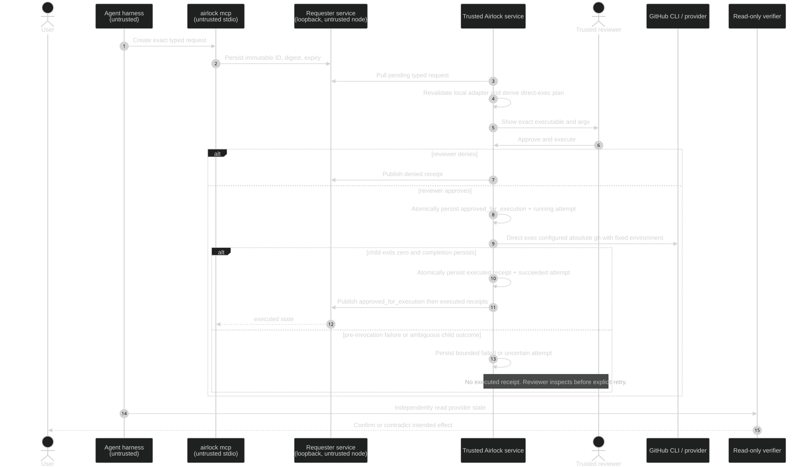

End-to-end timing
Where the human enters the loop
The reviewer inspects validated typed fields and the locally reconstructed executable/argv, then chooses Approve and execute or deny. Airlock persists approval plus a running attempt before direct local execution.
Open full-size SVG ↗

Persist before effect: an
approved_for_execution receipt and running attempt are durable before Airlock invokes the configured absolute CLI.Receipt semantics
What each state actually proves
| State | What it proves | What it does not prove |
|---|---|---|
pending | The requester persisted a typed request. | Review, approval, or execution. |
approved_for_execution | A trusted reviewer authorized a persisted execution attempt. | That the provider action ran or succeeded. |
denied | The trusted side or reviewer declined the request. | Any external change. |
executed | The trusted child returned success and terminal state persisted. | That the provider accepted it or the intended effect exists. |
Failure paths
Failures stop before authority drifts
- Expired, replayed, malformed, or adapter-invalid requests are rejected before human review.
- A reviewer can reject without exposing credentials or trusted action text to the requester.
- Concurrent/replayed POSTs cannot create a second running provider invocation.
- If execution fails or becomes uncertain, no
executedreceipt is emitted; the reviewer may explicitly retry and verify. - Receipts are sanitized and never include a reusable approval or executable command.
- External verification remains independent of the human-entered outcome receipt.